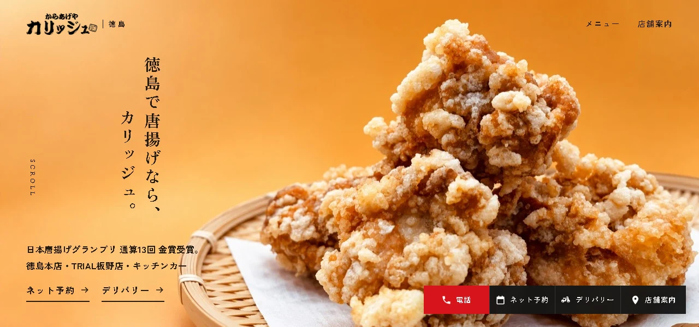
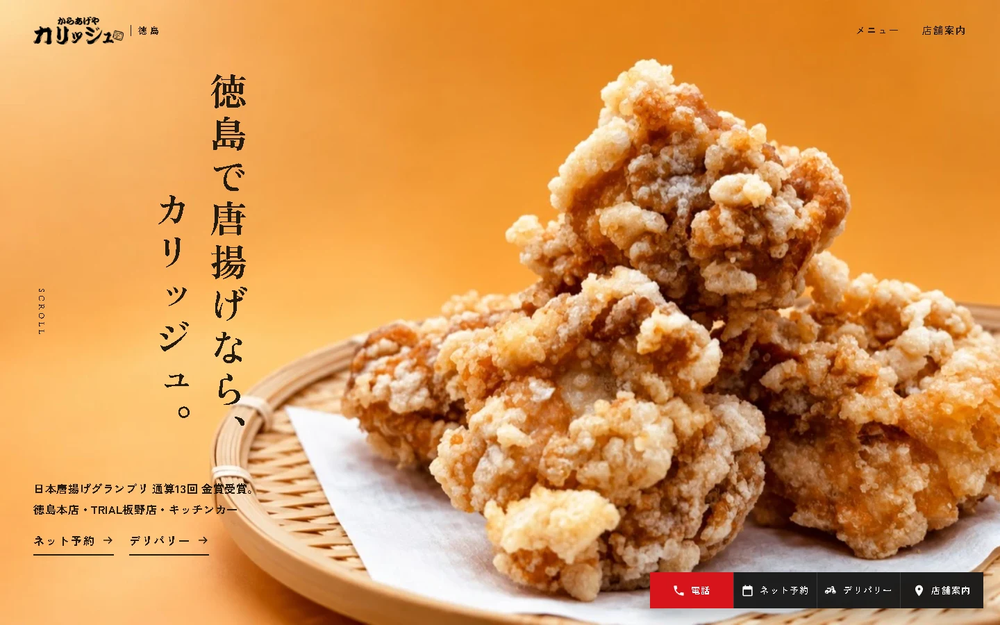
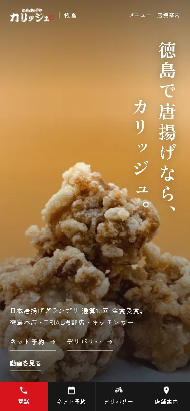

2026年10月10日更新 ／ 香川さん確認用・本番未反映
PCの最初の動画を、横長に。
唐揚げを引き揚げる実写に、左右のフライヤーや油面をAIで補完しました。採用した寄りの構図を、下の確認サイトに反映しています。
実際のホームページで確認するPC用動画（スマホからも再生できます）
16:9・1280×720・約6秒・無音。唐揚げと網の形・引き揚げる動作は元の実写を使用しています。
確認サイトは幅900px以上でこの横長動画、スマホでは従来の縦動画を再生します。動画後の写真と文字の演出は従来どおりです。再確認するときは「動画を見る」を押してください。
動画は画面全体に広げ、余白や黒帯を出さずに表示します。画面の縦横比に応じて映像の端が切り取られます。
香川さんの確認をいただいてから、本番ホームページへ差し替えます。
動画後の写真の表示案
低いPC画面（1280×600）

高さのあるPC画面（1440×900）

スマホ表示
